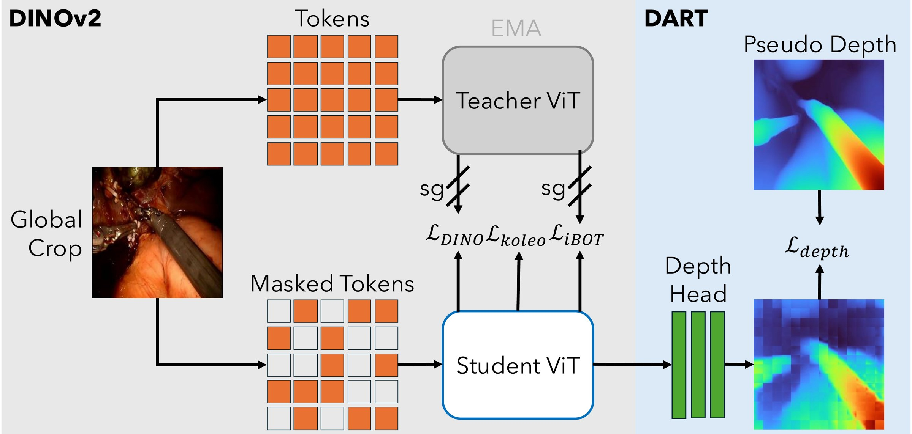

Ask DINOv2 to also paint the depth of the patches it can't see. The features get sharper for surgery, and at test time it still only needs RGB.
One small head, one extra loss
Natural-image foundation models transfer poorly to surgery, and standard self-supervised pretraining ignores scene geometry. DART keeps DINOv2 exactly as is and adds a pixel-space depth target at the masked iBOT patches.

Pseudo-label
Run Depth Anything V2-L once over 3.4M LEMON frames (938 h of surgical video). No sensors, no annotation.
Mask & distill
Standard DINOv2: DINO, iBOT and KoLeo losses with an EMA teacher, 50% of global-view patches masked.
Paint the depth
A 3-layer MLP turns each masked student token into a 16×16 depth patch (ℓ1 loss). Discard it after pretraining.
Better features, everywhere we looked
Frozen ViT-B backbones with only task heads trained, on 8 out-of-domain surgical benchmarks. Same data, same budget: the only difference between DINOv2 (LEMON) and DART is the depth target.
Segmentation: drag to compare
EndoVis18
DART gives crisper instrument boundaries and fewer stray false-positive blobs, even against DINOv2 trained on identical data.
Depth on SCARED-C
Finer delineation of small protruding structures, while LEMON-FM and DINOv2 tend to over-smooth. DART reaches δ1 = 0.653, the best of all models.
What does depth teach?
First three PCA components of the patch features, shown as RGB. With the depth target, instruments and tissue become coherent regions with sharp edges, and specular highlights stop leaking into the features.
Both models saw exactly the same images for the same number of steps.
Depth reconstructions during pretraining
Hover or tap a frame to see DART's reconstructionDrop-in RGB backbone
The released encoder is a plain ViT-B/16. Load it and use it like any DINOv2 backbone: no depth input anywhere.
Extract features
import torch from dart.vit import ViT model = ViT(img_size=224, patch_size=16, embed_dim=768, depth=12, num_heads=12) ckpt = torch.load("dart_vitb16.pth", map_location="cpu") model.load_state_dict(ckpt["teacher_backbone"]) model.eval() # img: (B, 3, H, W), ImageNet-normalized RGB cls = model(img) # (B, 768) fmap = model.forward_features(img) # (B, 768, H/16, W/16)
Pretrain your own
# 1) RGB-D shards: video frames + Depth Anything V2 pseudo-depth python video_to_rgbd_shards.py \ --video_dir /path/to/videos --output_path /path/to/shards \ --depth_anything_repo /path/to/Depth-Anything-V2 \ --model_checkpoint checkpoints/depth_anything_v2_vitl.pth \ --encoder vitl # 2) DINOv2 + depth-as-target pretraining torchrun --nproc_per_node=2 train.py \ --data_path /path/to/shards --save_dir /save/path \ --arch vit_base --patch_size 16 --base_lr 1.5e-3 \ --batch_size 128 --momentum_teacher 0.996 \ --depth_loss_weight 0.1
BibTeX
If DART is useful in your work, please cite:
@inproceedings{han2026dart,
title = {DART: Depth-as-Target Pretraining for Surgical Vision Foundation Models},
author = {Han, John and Schmidt, Adam and Jamal, Muhammad Abdullah and Wu, Jie Ying and Mohareri, Omid},
booktitle = {British Machine Vision Conference (BMVC)},
year = {2026}
}